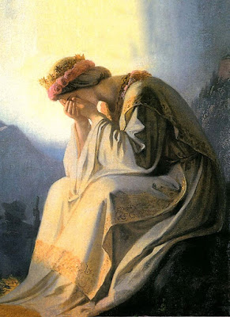
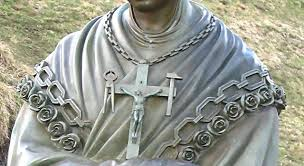
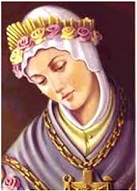
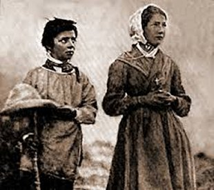
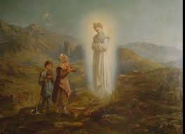

INÍCIO DA HISTÓRIA
La Salette-Fallavaux era uma
pequena aldeia situada nos Alpes franceses, pertencente a Diocese de Grenoble, e
que possuia uma humilde Igrejinha 
Mélanie Calvat de 14 anos de idade e Maximin Giraud de 11 anos, eram pastores, que arranjavam serviço tocando gado na região. Mas eles não se conheciam. Não eram de La Salette. Suas famílias eram de Corps, uma pequena cidadezinha situada no Vale de La Salette. Nesta época, Mélanie cuidava do gado do senhor Baptiste Pra, que era agricultor e morava em Les Ablandens, e Maximin, cuidava do gado do senhor Pierre Selme, que também vivia em Les Ablandens.
Na véspera da Aparição, ou seja, no dia 18 de Setembro de 1846, Mélanie tocando o gado, subiu o morro próximo de La Salette, onde havia excelente pastagem. Percebeu que aquele menino Maximin, com seu gado, vinha acompanhando o seu trajeto. Ela não gostou, por que não queria companhia. Mas Maximin que se aproximava, fingiu não perceber. E na continuidade, tanto ele insistiu que ela acabou cedendo, e então, juntaram os dois gados e colocaram para pastar num excelente local, enquanto os dois ficaram brincando, coisas de crianças.
Mais tarde, quando o sino da Igreja de La Salette anunciou o Ângelus, ela fez sinal para o Maximin tirar o chapéu, e juntos rezaram três AVE MARIA. Depois, ela lhe ofereceu um pão e inventou um jogo para se distraírem. E assim permaneceram até o final do dia, momento em que levaram de volta as vacas para as suas casas.
Na manhã seguinte, o dia estava lindo, o céu sem nuvens e com o sol brilhando intensamente. Subiram o morro com o gado e se fixaram num local adequado, com boa pastagem. Ajeitadas as vacas no pasto, eles começaram outra brincadeira que a Mélanie gostava muito, de edificar o que ela denominava de “paraíso”. Consistia em construir uma pequena casinha de pedras, recoberta com ramalhetes de flores silvestres. Para facilitar o trabalho das crianças, no local havia uma imensa jazida de pedra ardósia, de onde tiravam placas de ardósia, que eram ótimas para este tipo de brincadeira. Também, nesta região, corria um regato chamado Sézia, proveniente do degelo das neves no cume dos Alpes, e pelo mesmo motivo do degelo, havia uma fonte de água na encosta do morro. Todavia, depois da Aparição, esta fonte de água nunca mais secou, ficou permanentemente com um bom volume de água, que é usada pelos visitantes que passam pelo local. Aconteceram muitos milagres e graças notáveis foram e tem sido alcançadas, por aqueles que com fé, beberam daquela água que jorra no local onde NOSSA SENHORA apareceu.
E os dois pastores ao lado da pastagem, enquanto as vacas comiam, começaram as suas brincadeiras: construíram um belo “paraíso”, bem acabado e ornamentado com flores. Assim que terminaram a obra, também se afastaram um pouco do local e foram descansar, Mélanie deitou num canto e Maximin ficou mais acima. Tiraram uma bela soneca. Quando ela acordou não viu as vacas... Assustada, chamou Maximin e desceram o morro correndo, até uma pequena colina ao lado, quando então suspiraram aliviados, vendo que as vacas também estavam confortavelmente deitadas, ruminando a refeição que haviam saboreado. Então, subiram o morro novamente para pegar a sacola de pano na qual transportava a merenda, e que haviam deixado em cima do “paraíso”.
Com a sacola na mão descendo o morro, tomou um grande susto, tendo o seu cajado de pastora caído ao chão, ao ver uma luz bem brilhante um pouco mais abaixo, bem na sua frente. Então disse a Maximin:
- “Está vendo lá embaixo uma grande luz”?
- “Sim estou vendo. Mas se nos tocar vou dar uma cacetada nela”.
Descreve Mélanie: “Aquela imensa luz que brilhava intensamente tinha a forma de uma esfera, e parecia se abrir. Então, vimos no seu interior os contornos de uma SENHORA, que era muito mais brilhante que a própria esfera de luz. ELA estava sentada numa pedra em forma de banco, com os cotovelos apoiados nos joelhos e o rosto coberto com as mãos”.
Era o dia 19 de Setembro de 1846, e os dois pastores estavam atônitos, distantes cerca de 20 metros da Aparição. Então ouviram o convite da SANTÍSSIMA VIRGEM MARIA:
- “Venham meus filhos, não tenham medo. Aproximem-se. Estou aqui para lhes anunciar uma grande notícia”.
Os dois rapidamente correram até NOSSA SENHORA.
COMO NOSSA SENHORA APARECEU

“A coroa de rosas que ELA usava na cabeça era tão bela, tão brilhante, que é impossível descrevê-la. As rosas eram de diversas cores, não foram cultivadas aqui na Terra, por que eram simplesmente maravilhosas. A coroa em si era formada por uma reunião de rosas. Elas, de maneira delicada, se substituíam e mudavam de cor, porque do centro das rosa saía uma luz tão bela, que fascinava e as tornavam de uma beleza esplendorosa. Da coroa de rosas subiam raios de ouro e uma grande quantidade de outras florinhas misturadas com brilhantes. O conjunto era maravilhoso e extremamente cativante e tão bonito, que sozinho brilhava mais do que o nosso Sol”.
“Os sapatos eram brancos, mas de um branco prateado, brilhante. Havia rosas em torno deles, todas elas de uma beleza fulgurante. Do centro das rosas saia uma chama de luz muito bonita e muito agradável de ver. Sobre os sapatos havia uma fivela de ouro brilhante, não de um ouro igual ao nosso da Terra, mas um ouro especial, um ouro do Céu”.
“NOSSA SENHORA tinha também uma belíssima cruz num colar, pendurada no pescoço. Parecia ser dourada. Sobre a cruz havia um crucificado, com certeza representando JESUS. Ao lado das extremidades dos braços da cruz, de um lado havia um martelo e do outro uma torquês. A cor da pele do crucificado era natural, mas brilhava com grande fulgor. E a luz que emanava do Corpo DELE, parecia dardos brilhantes que perpassavam o meu coração e me envolvia com um grande desejo de me fundir NELE”.
Geralmente se interpreta o “martelo” como o símbolo daquelas pessoas que por sua vida má, pelo desprezo a Lei Divina e até pelo ódio a DEUS e as coisas Sagradas, pregam ainda mais NOSSO SENHOR na Cruz. Nesta mesma concepção, a “torquês” representa aqueles que, pelas suas boas ações e boas obras, diminuem as dores de JESUS e, dentro das suas possibilidades, tentam despregá-LO da Cruz.
Mélanie continua descrevendo: “O olhar da MÃE DE DEUS, não se consegue descrevê-lo com palavras. As frases que normalmente compomos servem unicamente para facilitar a nossa comunicação terrestre, mas não nos oferece meios para explicar fatos, ornamentos e a beleza celeste, assim como não consigo explicar com autenticidade a beleza do olhar maravilhoso e encantador da VIRGEM SANTÍSSIMA. Apenas posso dizer que, quando olhava para ELA, bem nos Seus lindos olhos, meu coração pulsava forte e ligeiro, demonstrando uma impressionante e indescritível feliz revolução de Amor, que ocultava as coisas da minha mente e me envolvia numa vontade única de somente olhar para NOSSA SENHORA, de contemplar a sua linda e puríssima face, e de ouvir o adorável som das Suas palavras, com o espírito totalmente embevecido e inebriado de amor”.
“A voz da bela DAMA era suave. Encantava, fascinava e fazia um extraordinário bem ao coração. Saciava a vontade e de uma maneira misteriosa, aplainava e eliminava todos os obstáculos no coração”.
Para Maximin: “A voz da VIRGEM SANTÍSSIMA ia diretamente ao coração, sem passar pelos ouvidos. E tem uma harmonia tão admirável, que nem os mais belos concertos realizados pelos mais hábeis peritos profissionais da música conseguem reproduzir, por que o som da voz de NOSSA SENHORA era um som Divino, constituído dos mais belos e harmoniosos acordes que enfeitam o Céu”.
Continua Mélanie: “A SANTA VIRGEM MARIA estava envolta em duas claridades bem distintas. A primeira estava mais próxima DELA e a segunda era maior e nos abrangia, encontrávamos dentro dela. A luz não cintilava, mas era mais brilhante que a luz do Sol. Todavia, o seu brilho não irritava os olhos e nem fatigava a visão”.
As palavras e explicações da MÃE DE DEUS tinham um efeito surpreendente e significativo, por que produziam o que significavam. Melhor dizendo, as crianças “viam com os próprios olhos” o que a VIRGEM SANTÍSSIMA descrevia como se ali estivesse um imenso telão mostrando o que ELA dizia. O telão não existia, mas os videntes viam nitidamente as imagens no espaço visual. Mélanie explicou:“Os acontecimentos se desenrolavam diante dos meus olhos à medida que ELA descrevia cada fato. Assim, as ações que iam ocorrer no futuro, ou que já tinham acontecido no passado, apareciam visivelmente em movimento, à medida que NOSSA SENHORA descrevia o conteúdo da Mensagem”.
A MENSAGEM DA VIRGEM
Os dois, Melanie e Maximin, se aproximaram da SANTÍSSIMA VIRGEM MARIA e ELA se colocou de pé dando alguns passos na direção das crianças. A VIRGEM não pisava o chão, pairava cerca de uns 10 centímetros acima do solo, e logo começou a falar:
“Quero lhes dizer, que se o meu povo não quiser se submeter (não se converter), não posso continuar impedindo o braço de MEU FILHO de exercitar a Justiça, golpeando fortemente a humanidade. Saibam que o braço DELE é pesado e enérgico, e não posso mais segurá-LO”.
“Há muito tempo que sofro por causa do triste comportamento humano. Para que não sejam abandonados pelo MEU FILHO, sou obrigada a rezar constantemente sem cessar. Mas, vocês não se emendam. ELE lhes deu seis dias para trabalhar e reservou o sétimo dia para ELE, para vocês LHE dar a necessária e devida atenção. Porém vocês não querem se dedicar a ELE. Então, é isso que torna cada vez mais pesado o braço do MEU FILHO”.
SINAL DA VERACIDADE DA PRESENÇA DA VIRGEM
Para deixar uma prova
evidente da Aparição, ELA disse:

“Também os carreteiros não fazem outra coisa senão blasfemar e envolvendo o nome do MEU FILHO, como se ELE fosse culpado dos seus desacertos. Isto são duas coisas que aumentam ainda mais o peso do braço DELE. Assim, se a colheita se estragar, será por culpa de vocês mesmo. EU fiz vocês compreenderem isto no ano passado com as batatas. Mas vocês não prestaram atenção. Pelo contrário, quando as encontraram estragadas, juraram e blasfemaram colocando a culpa no MEU FILHO. Pois saiba que elas vão continuar a se estragar, até que no Natal já não haverá mais nenhuma”.
Com estas palavras NOSSA SENHORA se referia a acontecimentos conhecidos pelas crianças. Por que houve numa região da França uma notável quebra na safra, que inclusive, serviu de pretexto para motins populares. NOSSA SENHORA esclareceu para os videntes, que a verdadeira causa dessa desgraça era dois pecados especiais: Primeiro, a violação do Mandamento que manda repousar e não trabalhar aos Domingos; Segundo, pelo vício generalizado de proferir blasfêmias. E disse a MÃE DE DEUS: “Se não cessassem essas ofensas, a situação continuaria piorando até o fim do ano”.
E Maximin espantado com as palavras da VIRGEM, exclamou:
- “Oh! Não, minha SENHORA, isso não pode ser verdade”!
- “Sim, meu filho, você vai ver”. E continuou dizendo:
“Aqueles que têm trigo não semeie, senão animais vão comê-lo. E se alguns pés brotarem, na hora de batê-lo ele vai se desfazer em pó. Virá uma grande fome. Antes que venha, as criancinhas com menos de sete anos de idade apresentarão um tremor e morrerão nos braços das pessoas que cuidam delas. Os maiores farão penitência por causa da escassez de alimentos. As uvas se estragarão e as nozes se arruinarão”.
Estes anúncios se cumpriram fielmente e serviram como prova da autenticidade da Aparição de NOSSA SENHORA e dos Segredos que ELA revelou, os quais foram transmitidos a cada um dos pastores, mas que só deveriam ser publicados doze anos após, ou seja, em 1858.
Maximin explicou como a bela DAMA passou o segredo para eles: “ELA embora conservando o mesmo tom de voz, quando falava a Mélanie eu não ouvia, e quando me confiava o Segredo, Mélanie nada ouviu”.
Assim, após confiar um Segredo a cada um, os dois passaram a ouvi-LA normalmente. E a VIRGEM MARIA completou o anúncio que provava a veracidade da Aparição.
- “Se os homens se converterem, as pedras se transformarão em trigos e as batatas serão encontradas já plantadas na terra”.
Depois ELA perguntou aos pastores:
- “Meus filhos, vocês fazem bem as orações”?
Eles responderam:
- “Não minha SENHORA, não muito”.
- “Ah, meus filhos, é preciso rezá-las direito no fim do dia e pela manhã. Quando não tiverem tempo, rezem só um PAI NOSSO e uma AVE MARIA. Mas, quando tiverem tempo, é preciso rezar bem mais”.
Depois ELA perguntou as crianças:
- “Meus filhos, vocês já viram o trigo estragado”?

- “Não, minha SENHORA, nunca vi”.
- “Mas você, meu filho, deve ter visto uma vez perto de Coin, junto com seu pai, lembra-se? O homem disse a seu pai: vem ver meu trigo como se estragou. Vocês foram ver e seu pai pegou duas ou três espigas de trigo, esfregou-as nas mãos e elas caíram reduzidas a pó”!
- “É bem verdade, minha SENHORA, mas eu não estava me lembrando”.
E num derradeiro adeus, olhou carinhosamente para as crianças e depois de alguns minutos lhes disse:
- “Pois bem, meus filhos, com exceção dos Segredos que deverão ser revelados em 1848, vocês devem descrever tudo isto ao meu povo”.
Assim que disse estas palavras, a luz que a envolvia ficou mais intensa e aos poucos foi ocultando a Sua Pessoa, fechando-a numa espécie de globo, que foi subindo para o Céu.
Depois de mais algum tempo, o sol começou a descer indicando que o dia estava terminando. Mélanie quebrou o seu cajado e fez uma cruz, fincando-a no lugar onde NOSSA SENHORA esteve. Depois os dois voltaram primeiro a casa de seus patrões e contou tudo, menos o Segredo. Os patrões ficaram comovidos e levou os dois jovens para descrever os fatos ao Pároco Padre Jacques Perrin, em La Salette. Na hora de conversar com o sacerdote Mélanie ficou surpresa, pois falou em francês corrente, idioma que ela não dominava.
A notícia circulou ligeiro produzindo uma grande comoção no clero e no povo. Os videntes passaram por diversos interrogatórios, na Prefeitura, na Igreja e na Diocese, e mesmo estando um distante do outro, durante mais de três meses, sempre afirmaram a mesma realidade incontestável da Manifestação Sobrenatural. Como sempre, havia os que acreditavam e aqueles indiferentes que não acreditavam, e continuaram a viver do mesmo jeito com os seus vícios e palavrões. E assim, na sequência dos meses cumpriram-se as primeiras advertências de NOSSA SENHORA. Atuou decisivamente o fato deles não observarem o repouso dominical, pois só tinham tempo para o cultivo intenso do trabalho, não rezavam, e praticavam o vício da maldição e da blasfêmia, acompanhados de um constante relaxamento religioso. As batatas e os vinhedos apodreceram, o trigo se desfazia atingido por uma doença não conhecida, havendo grande quebra na safra e originando a fome.
Cumpriu-se também outra terrível advertência da VIRGEM MARIA, com a morte em quantidade de crianças com menos de sete anos de idade.
O povo da região, assustado
com os fatos e inspirado pela Aparição da SANTÍSSIMA VIRGEM, entendeu a situação
e reagiram com peregrinações 
Mesmo assim, apesar das evidências que confirmavam a presença da MÃE DE DEUS, aconteceram divergências no clero, diversas autoridades se manifestavam abertamente contra a Aparição em La Salette, não acreditando nos videntes.
Com a revelação dos Segredos a partir de 1848 a oposição cresceu vertiginosamente. Os inimigos de La Salette se insurgiram de tal modo, que criou uma séria confusão entre os franceses. Este acontecimento foi tão grande e causou tantos problemas, que resultou num esfriamento no ardor do povo e as Igrejas recomeçaram a ficar novamente vazias, com poucos frequentadores.
A Santa Sé objetivando estabelecer a paz entre os cristãos, inclusive estimulando maior respeito e veneração a MÃE DE DEUS, permitiu ao Santo Ofício em Dezembro de 1915, proibir a publicação de qualquer versão dos Segredos, para evitar que ocorressem atritos e discussões. Esta decisão, entretanto, de maneira alguma desencorajava a Devoção a La Salette, que continuou, embora com menor entusiasmo. A decisão do Vaticano foi reforçada pela realidade de que os originais do Segredo escrito e assinado pelos videntes misteriosamente haviam desaparecido. E por isso mesmo, o Segredo das Mensagens de NOSSA SENHORA ficou totalmente oculto.
Todavia, no final do século XX, o sacerdote francês Padre Michel Corteville, decidiu preparar a sua tese de doutorado escolhendo exatamente o tema La Salette. Obtendo licença para pesquisar os arquivos do Vaticano se instalou em Roma e iniciou os trabalhos. Porém as informações dos bibliotecários da Santa Sé eram desanimadoras, pois diziam que os documentos de La Salette que ele procurava estavam definitivamente perdidos! O Padre não desanimou, continuou examinando os documentos antigos, embora aparentemente mudando o foco da pesquisa, ou seja, agora buscando pastas com documentos dos Papas. Em Outubro de 1999 abriu uma caixa contendo velhas pastas de arquivos antigos e maços de papel amarrados. Do lado de fora de uma das pastas estava escrito, pontificado de Leão XIII, mas dentro, que surpresa, havia pastas do tempo de Pio IX. Numa delas uma maravilhosa e inesperada descoberta, ali estava todo o dossiê com os documentos originais sobre a Aparição de NOSSA SENHORA em La Salette, inclusive as várias redações do Segredo, feitas pelos videntes.
Ele preparou sua tese que defendeu com total sucesso na célebre Faculdade de Teologia Angelicum, da Ordem Dominicana em Roma. Sua tese vitoriosa, posteriormente, foi resumida num livro, com a colaboração do escritor Padre René Laurentin, sob o titulo: “A Descoberta do Segredo de La Salette”. E justamente, graças a este precioso trabalho é que podemos contemplar agora o completo Segredo anunciado pela VIRGEM MARIA.